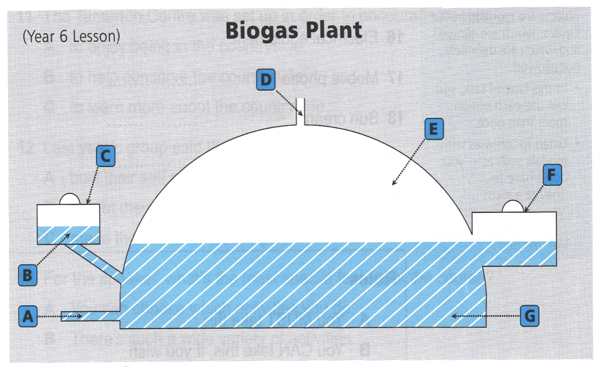

Complete the form below.
| Example | |
| Enquiries about temporary work | |
| Personal Details: | |
| Name: | Jane 1. |
| Address: |
2. Exeter |
| Telephone number: | 07792430921 |
| Availability: | Can start work on 3. |
| Work details: | |
| Preferred type of work: | Assistant 4. |
| Relevant skills: | Familiar with kitchen 5. |
| Relevant qualifications: | A 6. certificate |
| Training required: | A 7. course |
| Referee: | |
| Name: | Dr Ruth Price |
| Position: | 8. |
| Phone number: | 9. |
| Other: | Applicant has a form of 10. |
Choose the correct answer, A, B or C.
What rules apply to taking different objects to the Centre?
Match each object with the correct rule, A-C.
Choose the correct letter, A-C.
Label the diagram below.
Choose the correct letter, A-G, next to questioons 21-25 below

Complete the flow chart below.
Choose FIVE answers from the box and write the correct letter A-G, next to questions 26-30.
Complete the form below.